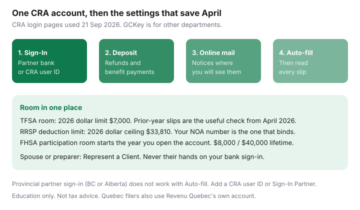

Personal Finance · Canada
Set Up CRA My Account Once: The Canadian Tax Hub That Saves Filing Fees and Missed Credits
A lot of “tax-filing” cost is not the software. It is a missing T4, a TFSA contribution made from memory, and a notice that sat in a mailbox through a review deadline. CRA’s account for individuals is the hub that holds the room numbers, the benefit payments, the mail, and the Auto-fill feed your software uses. Set it up once, on a calm week, and April gets shorter whether you NETFILE or you pay a preparer.
Disclosure: Education only. Not tax advice and not a CRA endorsement. This page does not ask for your SIN, password, or security code. Register only on canada.ca. No affiliate offer fits a government account.
Key takeaways
- Sign in with a Sign-In Partner (your bank or credit union) or a CRA user ID and password. CRA says GCKey cannot open a CRA account.
- Turn on direct deposit and online mail so refunds and review letters do not depend on paper.
- Auto-fill my return inserts what CRA already has. You still check every line. Provincial-partner sign-in (B.C. or Alberta) does not work with Auto-fill.
- Read TFSA, RRSP, and FHSA room here before any automated contribution. 2026 TFSA dollar limit $7,000. 2026 RRSP dollar ceiling $33,810. FHSA room starts when you open the account.
- A spouse or preparer gets in through Represent a Client, not through your banking password.
Registration paths and security
CRA’s sign-in page, used 21 Sep 2026, offers a CRA user ID and password, a Sign-In Partner, and a provincial partner for British Columbia and Alberta. The same registration help page states plainly that you cannot use GCKey for a CRA account. GCKey remains a Government of Canada credential for other departments. If an old bookmark sends you to GCKey for “My Account,” you are on a path CRA has closed for this service.
A Sign-In Partner means you authenticate at the bank and return. CRA says none of your banking information is shared with the Agency and the partner does not learn which government service you used. The list on that date included the big banks, Tangerine, Simplii, Desjardins, Wealthsimple, ATB, and a long set of credit unions. Use the live list. Do not type the password into a page that is not the bank’s own site. CRA’s own warning: do not use browser autofill on a shared computer, and do not register with someone else’s online-banking login. If your SIN gets linked to their credential, they can see your tax information.

Auto-fill my return: what it pulls and what you must still check
Once the account works, certified software can request Auto-fill. CRA’s description: the service fills parts of the return from information on file at that moment, and you are responsible for what you file. T4s and other slips usually land if the issuer filed them. A side-contract paid in cash, a charitable receipt, rental income, and a brokerage slip that has not posted yet will not invent themselves. Compare Auto-fill to the folder in software versus a preparer before you transmit.
Two access limits matter. If your only credential is a provincial partner (Alberta.ca Account or BC Services Card), CRA says you cannot use Auto-fill until you also register a CRA user ID or a Sign-In Partner. And if you are filing for someone else, you do it from Represent a Client after they authorize you — not by sitting down in their Sign-In Partner session.
RRSP, TFSA, and FHSA room and benefit statements in one place
The account shows the RRSP deduction limit from your notice of assessment. The 2026 dollar limit is $33,810. That is a ceiling. Your number is the lesser of 18% of prior-year earned income and that ceiling, minus a pension adjustment, plus unused room. TFSA room includes the 2026 dollar limit of $7,000 plus unused room and minus contributions. CRA says TFSA records for 2025 are processed with a useful My Account view from April 2026, and you should still match the issuer. Withdrawals come back as room on 1 January of the next year. FHSA participation room is $8,000 in the year you open and does not pile up for the years you waited; the lifetime contribution cap is $40,000. Benefit and credit payments (GST/HST credit, Canada child benefit, and others you qualify for) are listed here too, which is how you notice a deposit that stopped.
| Figure | 2026 anchor | Trap |
|---|---|---|
| TFSA room | $7,000 dollar limit plus unused room | Same-year recontribution after a withdrawal. Excess tax is 1% per month. |
| RRSP deduction limit | $33,810 ceiling; your NOA is personal | Employer group RRSP deposits use this room too. |
| FHSA room | $8,000 in the year you open; $40,000 lifetime | Room does not retro-accrue. Carry-forward is capped. |
Direct deposit for refunds and benefit payments
Add the chequing account that you actually watch. A refund is faster by direct deposit when you NETFILE on time; CRA’s software partners describe a typical online refund in about two weeks, longer if you live outside Canada or the return is reviewed. Benefit payments use the same banking instructions. If you are mid bank switch, update CRA before you close the old account, or the payment returns and the mail starts.
Mail and notice settings that prevent missed deadlines
Choose electronic correspondence and then open it. A review letter about a donation or a tuition transfer has a response date. Paper mail to an old address is how people miss that date and then pay a preparer to reconstruct it. The email CRA sends is a notification that mail is waiting. The letter itself is inside the account. Check it on the same monthly pass as the credit-report habit, not only in April.
Share access carefully with a spouse or preparer via Represent a Client
Represent a Client is the portal inside a CRA account for authorized representatives. The steps CRA lists: sign in, add a representative account, register yourself or your business, then request authorization. Your preparer gives you a RepID. You approve a level of access. You can revoke it when the return is filed. Friends and family use the same door. They do not get your password “just this once.”
If you live in Québec, the federal account does not replace Revenu Québec’s file for the provincial return. Set that up as its own task so TP1 mail has a home too. Neither login is a place to accept a text message from “CRA” that wants a code. CRA does not ask you to hand a one-time code to a caller.
Sources & date stamps
- CRA, Sign in to your CRA account and Register for a CRA account — Sign-In Partner, CRA user ID, provincial partners; GCKey cannot be used for CRA accounts (pages used 21 Sep 2026).
- CRA, Auto-fill my return — information on file only; provincial-partner sign-in excluded; Represent a Client path for filing for someone else (used 21 Sep 2026).
- CRA, About Represent a Client — authorization required; RepID (used 21 Sep 2026).
- CRA TFSA pages — 2026 dollar limit $7,000; April 2026 refresh for 2025 records; 1% monthly excess tax; room returns 1 January after a withdrawal.
- CRA FHSA and RRSP limits — $8,000 / $40,000; 2026 RRSP dollar limit $33,810 as a ceiling.
Frequently asked questions
Can I use GCKey for CRA My Account?
No. CRA's registration page, reviewed 21 Sep 2026, says you cannot use GCKey to sign in to a CRA account. GCKey still works for other Government of Canada departments. For CRA, use a participating Sign-In Partner or a CRA user ID and password.
Which banks work as a Sign-In Partner?
CRA publishes the list and it changes. The page used on 21 Sep 2026 included RBC, TD, Scotiabank, BMO, CIBC, National Bank, Tangerine, Simplii, Desjardins, Wealthsimple, and many credit unions. Sign in on the bank's own site. CRA says the partner does not learn which government service you opened, and you should not use autofill on a shared device.
What does Auto-fill my return actually pull?
Slips and amounts CRA has on file that day, inside certified software. It is not a complete return. You still add missing income, receipts CRA does not hold, and you still read the result before you NETFILE. A BC Services Card or Alberta.ca sign-in does not work with Auto-fill; add a CRA user ID or a Sign-In Partner.
Where do I see TFSA, RRSP, and FHSA room?
Inside the CRA account. The 2026 TFSA dollar limit is $7,000, and CRA says 2025 TFSA records are the useful refresh from April 2026. The 2026 RRSP dollar ceiling is $33,810; your deduction limit is the notice of assessment. FHSA room starts the year you open the account.
How should my spouse or accountant see the file?
Through Represent a Client, which you authorize and can revoke. Do not register your CRA account with someone else's online-banking credentials. CRA warns that linking your SIN to their sign-in gives them your tax information.